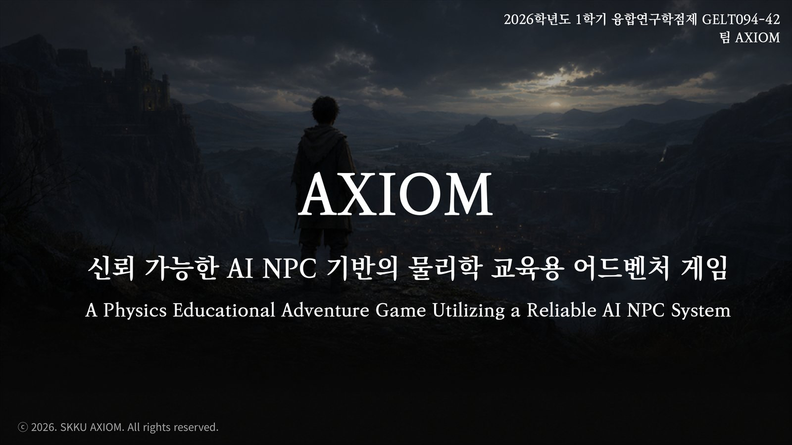
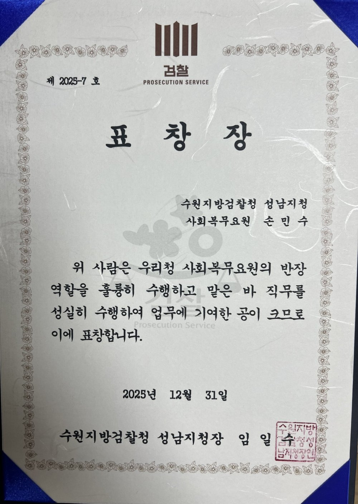
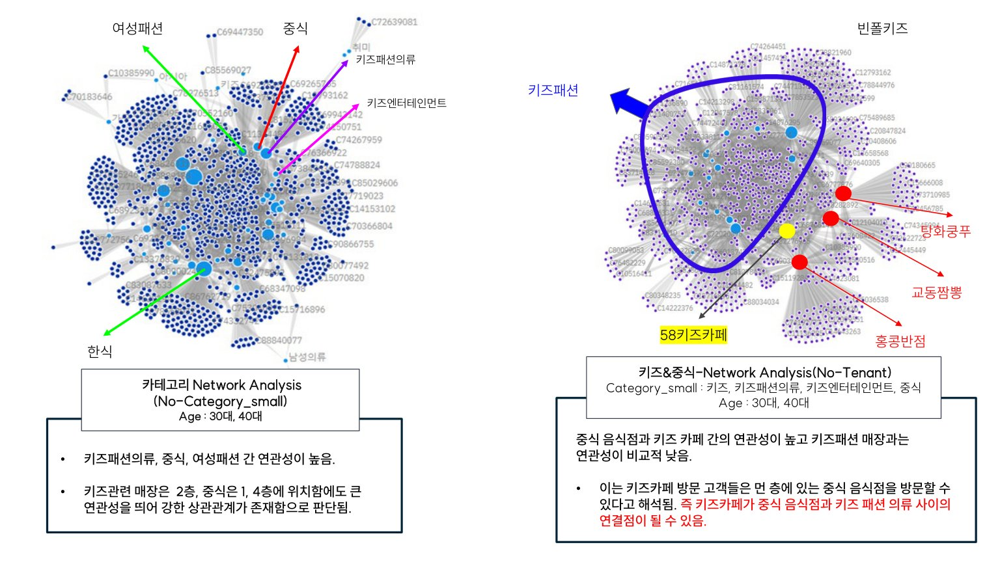
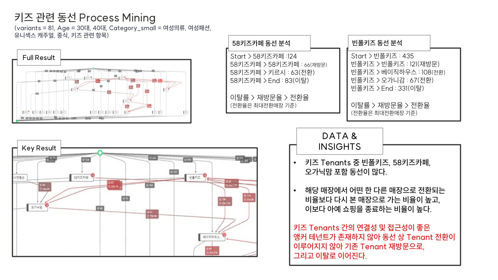

표적단백질 분해제 후보물질 탐색 에이전트 서비스 기획
표적의 문헌 근거 수집부터 후보 설계·과학 계산·연구자 검토까지 하나의 절차로 잇는 에이전트 서비스입니다. 이 기획으로 AI 신약개발 경진대회 예선 8위(504팀)로 본선에 진출했고, 현재 2인 팀으로 개발하고 있습니다. AI가 후보를 제안해도 연구 자원을 투입할 판단은 연구자의 몫 — 그 신뢰를 화면이 아니라 구조로 설계하는 것이 이 기획의 중심입니다.
전체 파이프라인 — AI의 제안이 정책을 직접 바꾸지 못하는 구조
flowchart LR T["표적 식별
표준 식별자 확정"] --> C["문헌 수집·정규화
원문 버전·위치 보존"] C --> LA subgraph AG["LLM 4역할 — 코드 Orchestrator가 통제"] LA["문헌 분석"] --> PL["계획"] --> CR["비판"] --> RP["보고"] end RP --> PV["변경 전후
영향 미리보기"] PV --> G1{"G1 연구자 승인
근거·탐색 범위"} G1 --> D["후보 설계·과학 계산
고비용 연산은 승인 후"] D --> G2{"G2 연구자 승인
후보 선택·검토"} G2 --> R2["최종 보고"] R2 --> G3{"G3 검토
주장·한계 확인"}
내부 — 실제 연구 절차
- 문헌 탐색, AI 근거 분석, 후보 설계, 과학 계산, 연구자 검토를 수행
- 관측·예측·가정·판단을 구분 — 자료에 없는 실험값을 만들지 않음
공개 웹 — 검증된 사례 재생
- 계산·검토를 마친 사례만 선택해 재생 — 저장 후보 비교·근거 열람 제공
- 방문자의 클릭을 실제 연구자 승인으로 기록하지 않음
문헌 데이터 파이프라인 — 형식이 다른 원문을 추적 가능한 근거로
flowchart LR SRC["공개 문헌 DB"] --> X["전문 XML"] SRC --> PD["PDF"] SRC --> AB["초록"] X --> N["공통 근거 형식으로
정규화"] PD --> N AB --> N N --> M["원문 버전·문장 위치·
실험 조건·단위 보존
없는 값은 결측으로"] M --> ST[("저장·조회
공통 스키마 계약")] ST --> AGT["에이전트 분석과
후보 설계에 공급"]
현재 상태
표적 식별과 문헌 수집 구간은 로컬 시제품으로 동작하며, 모듈 간 공통 스키마 계약을 먼저 정의해 2인 분업으로 개발하고 있습니다(본선 제출 2026.10). 문서 작성·계약 통과·코드 동작·과학 검증을 각각 다른 상태로 관리해, 되어 있는 것과 남은 것을 구분합니다.
융합연구학점제 AI NPC 게임 개발
LLM 기반 캐릭터와 자유 대화하며 물리 법칙을 발견하는 교육용 어드벤처 게임(Unity, 플레이타임 약 1시간). 3인 팀에서 기획과 클라이언트 개발·통합을 맡았습니다. 프롬프트만으로는 캐릭터가 세계관을 벗어나는 문제를, 입력 의도를 먼저 판단하는 LLM as a Router 구조로 팀과 함께 재설계했고, 저는 AI 응답이 검증을 거쳐 게임 상태로 안전하게 반영되는 클라이언트 런타임을 만들었습니다. 성과보고회 시연으로 포스터발표상을 받았습니다.

LLM as a Router — 자유 입력을 세계관 밖으로 내보내지 않는 설계
flowchart LR P["플레이어
자유 입력"] --> R{"LLM Router
발화 의도 판단"} R -->|"설득 시도"| B1["설득 판정 분기"] R -->|"일반 대화"| B2["세계관 응답 분기"] R -->|"탈옥성 입력"| B3["세계관 안에서
거절 처리"] B1 --> G["분기에 맞춘
응답 생성"] B2 --> G B3 --> G G --> V{"시스템 검증
상태 변경 조건 확인"} V -->|"충족"| U["Unity 상태 갱신
퀘스트·플래그 반영"] V -->|"미충족"| TK["대화만 표시
상태는 불변"]
클라이언트 런타임 아키텍처 — LLM 응답이 게임 상태로 안전하게 반영되는 경로 (담당 파트)
flowchart TB LLM["LLM 응답
(백엔드 — 팀원 담당)"] --> VAL{"상태 변경 조건 검증"} subgraph CL["클라이언트 런타임 — 본인 설계·구현"] GS["GameServices
서비스 등록·중복 차단"] subgraph SVC["진행 상태의 단일 원천 — 6개 런타임 서비스"] Q["Quest"] INV["Inventory"] NPC["Npc"] RULE["Rule"] FLAG["FlagStore"] SAVE["SaveService"] end BR["Bridge 계층
FlagSyncBridge · PuzzleSceneRelay"] end GS -. "등록·조회" .- SVC VAL -->|"충족 시에만"| SVC SVC --> BR BR --> MAP["맵·퍼즐 시스템
서비스 내부를 몰라도 flag 조건으로 동작"] SAVE --> DISK[("세이브 데이터
스키마 v1→v6 하위 호환 로드")]
모델 결정 — 같은 조건에서 비교하고 근거로 선택
상용 LLM(GPT-4o)과 로컬 LLM(Llama 3.1 8B)을 같은 실험 조건(호출 횟수·지연)에서 비교해 적용 모델을 결정했습니다. 비용·품질·지연의 트레이드오프를 수치로 확인한 뒤 선택하는 방식은, 클라우드 생성형 AI를 서비스에 쓸 때 그대로 적용됩니다.
포스터발표상 수상 확인서 보기 ↗옵시디언 기반 AI 협업 문서 체계 구축
AI가 조사와 코딩을 연속해 수행하면서 "무엇을 믿고 다음 일을 맡길지"가 문제가 됐습니다. 안드레이 카파시가 제안한 raw/wiki 구분에 착안해 collaboration·origin 계층을 더한 4계층 권한 체계를 옵시디언에 설계하고, AI 코딩 에이전트가 볼트를 직접 읽고 쓰도록 연결해 조사 → 정리 → 공동 작업 → 판단 기록이 한 곳에서 순환하는 Second Brain을 구축했습니다. 문서 간 링크로 모든 주장의 출처를 추적하며, 지금도 학업·프로젝트 전체를 이 체계로 운영 중입니다.
4계층 권한 구조 — AI가 빨라져도 통제가 유지되는 볼트
flowchart LR ME["사람(소유자)"] AI["AI 코딩 에이전트
볼트에 직접 연결"] subgraph SB["옵시디언 볼트 — Second Brain · 4계층 권한"] RAW["raw
원문 자료 원본"] WIKI["wiki
AI가 정리한 지식"] COL["collaboration
사람×AI 공동 문서"] ORG["origin
사람의 사고·판단 기록"] end AI -.->|"읽기만 — 요약으로 대체 금지"| RAW AI -->|"작성·갱신·링크 유지보수"| WIKI AI -->|"저자를 구분해 편집"| COL AI -.->|"읽기만 — 수정 금지"| ORG ME -->|"직접 작성"| ORG ME -->|"하이라이트로 질문·지시"| WIKI RAW -->|"출처 링크"| WIKI ORG -->|"파생 개념 링크"| WIKI
검찰청 행정업무 자동화 스크립트 개발
검찰청 사회복무 중 우편물 장부의 수신처 입력이 반복 업무였습니다. 처리 매뉴얼을 분석해 문서 유형과 수신처의 대응 규칙부터 정리한 뒤, AI를 활용해 한셀 스크립트를 빠르게 개발하는 방식으로 입력 자동화를 구현했습니다. 자동화를 포함한 업무 기여를 인정받아 지청장 표창을 받았습니다(2025.12).
자동 입력 — 스크립트 기능 2가지
- 서류별 담당 부서 기준표 — 서류 내용(제목·유형)을 입력하면 담당 부서가 자동으로 입력
- 검사실명 ↔ 검사실 호수 상호 완성 — 우편물에 둘 중 하나만 적힌 경우가 많아, 하나만 입력하면 나머지가 자동으로 채워지도록 개발
담당자가 유지하는 설계
- 기준표(데이터)와 스크립트(로직) 분리 — 검사실 구성이 바뀌면 표만 수정
- 프로그램을 모르는 담당자도 직접 유지 — 후임자에게 인수인계해 복무 종료 후에도 사용

보드게임 '회식으로 이사까지' 크라우드펀딩
자작 보드게임의 텀블벅 펀딩(2024.12). 단 한 건의 후원도 없는 상태에서 생산량을 정하고 약 430만 원을 선투입해야 했기에, 감이 아니라 데이터로 수요를 예측하고 원가 구조를 분석해 400세트 생산을 결정했습니다.
수요예측 — 유사작 데이터로 세운 생산량 근거
비교군 55개 — 수집과 검증의 로직
수요의 확률누적분포 — 400부는 분포 어디에 있었나
수요를 D = 관심 수 N × 전환 비율 R로 분해하면, N = 394 × 1.2 = 472.8이므로 R의 분포가 곧 수요의 분포입니다. 55개 비교군의 경험 누적분포(ECDF) 위에 결정(400부)과 실제 결과(333명)를 함께 놓았습니다. 곡선에 마우스를 올리면 위치별 누적 확률을 확인할 수 있습니다.
한 세트 추가 생산비가 세트당 수입의 약 20~35%로 작아 품절(공헌이익 상실)이 재고(한계비용)보다 큰 손실이었고, 남는 세트를 세트당 약 1,300~5,000원 이상에만 처분할 수 있다면 400부가 기대이익을 최대화하는 수량이었습니다(임계비율 기준). 실제 잔여분은 행사·커뮤니티 판매와 증정으로 소진됐고, 후원자 333명 — 품절 없이 분포의 71백분위에서 마감했습니다.
가격 상관 — 가격은 후원 비율을 설명하지 못했다
같은 55개 비교군에서 리워드 가중 단가와 전환 비율 R의 상관은 r = −0.28(R² = 0.08)에 그쳤고, 이상점 1건을 제외하면 통계적으로 유의하지 않았습니다. 가격을 낮춰 전환율이 오르기를 기대하기보다 관심 모수 자체를 키우는 쪽이 맞다고 보고, 홍보 만화 외주와 커뮤니티 홍보 등 수요 창출에 투자하는 근거로 삼았습니다.
실거래 데이터 기반 고객 이탈 구조 분석
전공 수업(데이터드리븐마케팅, 2022-1)의 5인 팀 프로젝트. 복합쇼핑몰 실거래 데이터에서 테넌트 네트워크 분석과 프로세스 마이닝을 담당해, 고객 동선 81개 유형을 분석하고 "이탈률 > 재방문율 > 전환율" 구조와 중심 테넌트의 부재를 정량화했습니다. 이 근거로 Anchor Tenant 도입과 멤버십 개선안을 제안했습니다.

